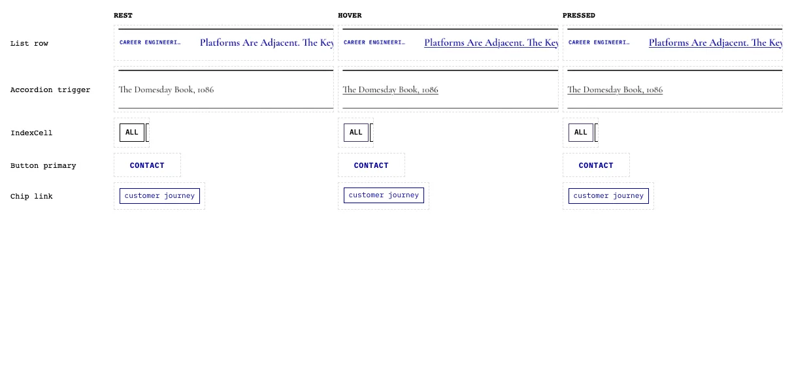

ST-262 · Pressed and hover in forced-colours mode
Issue #262. Phase 0 visual spec. Class names are the production names, scoped under a vspec wrapper. Values are tokens unless a system colour is named.
packages/design-system/src/ or apps/web/src/ changes until the Phase 0 boxes are ticked. Open decisions are in section 9. The forced-colours prototype is an approximation; the real check is Playwright forcedColors: 'active' after the build.1. Interactive prototype
Choose a mode. Normal is today's look. Forced colours, today imitates the browser stripping shadows and colours: pressed is the same as hover, and Button, Chip and IndexCell hover is the same as rest. Forced colours, proposed adds the rules below.
2. Before and after

forcedColors: 'active', hover and pressed forced with CDP. Pressed is identical to hover on all five; Button, IndexCell and Chip hover is identical to rest.Section 1, mode "Forced colours, proposed": hover is a 1px system-colour outline, pressed a 3px one, focus unchanged.
3. Behaviour annotations
Not applicable: no sidebar, nav rail, tab bar or anchor-bearing surface changes. The rules change how existing states render in forced-colours mode only; behaviour and DOM are unchanged.
4. Contrast, measured
Not applicable in the usual sense: forced-colours mode replaces every colour with a system colour chosen by the user, so the site does not control the ratio. The proposed rules use only Highlight, which the browser guarantees against Canvas. Verified after the build by the Playwright run in section 8; no ratio is claimed here.
5. Class naming table
| Class | Closest existing pattern | Decision |
|---|---|---|
| none | The rules are @media (forced-colors: active) blocks that reuse each component's existing classes (.rowLink, .trigger, .cell, .button, .chip, .iconButton, .pillSegment, .card, .optionLabel, .clearAllButton, .linked) | No new class. |
6. Component choice audit
No new component. Each affected component's stylesheet gets one media block. A shared mixin was checked and rejected: CSS modules in this repo have no shared at-rule include, and a global rule cannot target hashed classes.
7. Token list
| Role | Value |
|---|---|
| Hover, pressed and focus outline in forced colours | The system colour Highlight. Not a token: validate:tokens scans for --st-* references and a system-colour keyword is neither a token nor a raw colour value; validate:tokens:strict is checked at implementation. |
| Widths | 1px hover, 3px pressed, focus keeps --st-focus-ring (2px) and --st-focus-ring-offset |
| New tokens | None. |
8. Governance checks
| Check | Applies | Evidence |
|---|---|---|
| Phase 0 trigger (unreviewed visual format) | Yes: new look, in forced-colours mode only | This vspec; Before image dated 2026-11-24 |
| Nav annotations (six) | No | Section 3 |
| Interactive prototype | Yes: state and mode switching | Section 1, vanilla JS |
| CSS class reuse audit | Yes | Section 5; no new class |
| Component choice audit | Yes | Section 6 |
| Rendered check | Yes | A Playwright spec with forcedColors: 'active' asserts pressed differs from hover and hover differs from rest, on the surfaces in section 1 |
| Content Write Gate, rule-file write gate, diagram red-pen gate | No | No Sanity writes, no rule files, no diagram |
9. Decisions answered
An approval of this vspec as drawn takes the recommended answer for every open decision.
- Scope: forced colours only. The touch half of #262 (hover rules behind
(hover: hover), 0 guards today) changes about 20 stylesheets by a different mechanism and a different risk, so it moves to its own issue. Answered as drawn, 2026-11-24. - Look: hover is a 1px
Highlightoutline inside the box, pressed a 3px one, focus unchanged. Boxes (rows, cards, buttons, chips, cells, toggles, tiles) get them; text links keep their underline, which forced colours does not remove. Answered as drawn, 2026-11-24. - Surfaces: every surface that draws pressed with the shade or hover with a shadow or fill: List row, Accordion trigger, IndexCell, Card, FilterBar option and clear-all, Tile, Chip, Button, IconButton, SegmentedControl, Sidebar toggle. Answered as drawn, 2026-11-24.
- Check: add the Playwright forced-colours spec to the smoke suite so a new shaded surface without a forced-colours rule fails. Answered as drawn, 2026-11-24.
10. Change-specific sections
Not applicable.
11. Phase 0 checklist
- [x] vspec reviewed (2026-11-24)
- [x] class table approved (2026-11-24)
- [x] component choice audit approved (2026-11-24)
- [x] open decisions answered (approved as drawn, 2026-11-24)